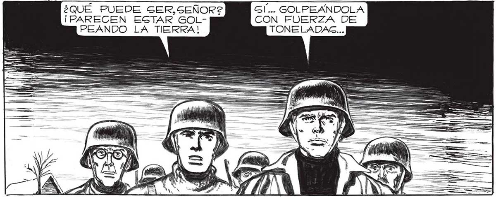
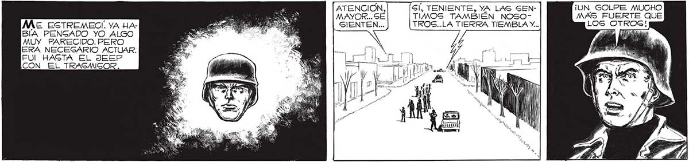
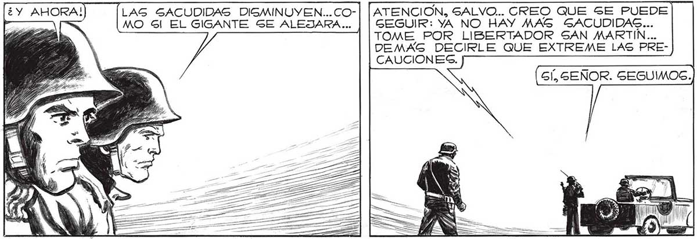

182 (¿Y AHORA! ¿QUÉ PUEDE SER,SEÑOR?2 ¡PARECEN ESTAR GOLPEANDO LA TIERRA! HASTA EL JEEP ¡CON_ EL _ TRASMSOR. LAG SACUDIDAS DISMINUYEN... COMO Gl EL GIGANTE SE ALEJARA... COMO Sl A VARIAS CUADRAS DE AQUÍ” TROTARA UN GIGANTE... GI... GOLPEANDOLA CON FUERZA DE TONELADAC... GIN EMBARGO, NO SE OYE NINGÚN RUIDO... ¡SOLO LAG SACUDIDAG DEL SUELO! SÍ, TENIENTE, YA LAS GEN- ¡UN GOLPE MUCHO TIMOS TAMBIÉN NOSO- MAS FUERTE QUE TROS..LA TIERRA TIEMBLA Y.. LOS ATENCION MAYOR... SÉ SIENTEN... | pool My , | mi — == f 7, A NE y '4 T pl Sm ' ON E í [YA PASO... SEGUIMOS AVANZANDO... ATENCION, SALVO... CREO QUE GE PUEDE GEGUIR: YA NO HAY MAS SACUDIDAS... TOME POR LIBERTADOR SAN MARTIN... DEMAG DECIRLE QUE EXTREME LAS PRECAUCIONES. GÍ, SEÑOR. SEGUIMOG. Daba


